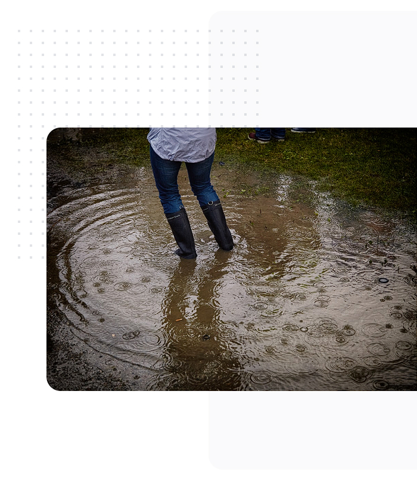

Proteja sua região com o sistema de vigilância de alagamentos e alerta de chuvas intensas
Tenha tranquilidade e segurança com o sistema de vigilância de alagamentos SVA.

Monitoramento em Tempo Real
Nosso sistema avançado monitora constantemente as condiçoes climáticas e hidrológicas, fornecendo alertas precisos e notificações em tempo real sobre possíveis alagamentos. Mantenha-se informado e tome medidas preventivas para proteger sua propriedade e comunidade. Logo abaixo no mapa estão os marcados os pontos criticos de alagamento, que devem ser evitados em caso de chuvas intensas.
-

- Risco de alagamentos

Receba alertas em tempo real sobre
chuvas intensas
Proteja-se e esteja preparado para qualquer eventualidade com o Alerta de Chuvas Intensas.